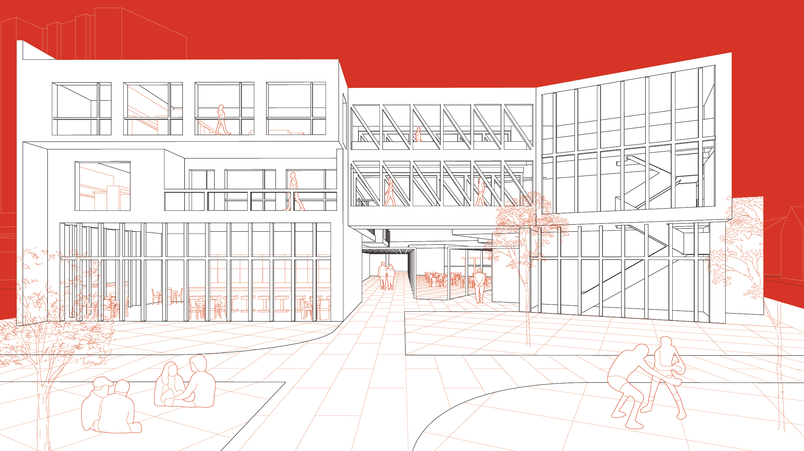

Broad Street, a major Providence thoroughfare, currently houses a number of businesses, retail locations, and apartments in a largely Dominican-immigrant community. However, Broad Street lacks the cohesion, planning, and resources necessary for an effective and engaging street. This project tasked me with redesigning a single block on the street, incorporating existing elements in a newly imagined complex. My design drew from precedents and research conducted on what makes streets effective, such as design elements that encourage pedestrians and slow fast-moving traffic.

Retail and dining (existing and new) exist on the Broad Street facade, while apartments are on the two higher levels. Apartments cascade backwards vertically so they can receive more light and can have outdoor spaces. A central courtyard in the building invites diners from the cafe as well as pedestrians from the street.
